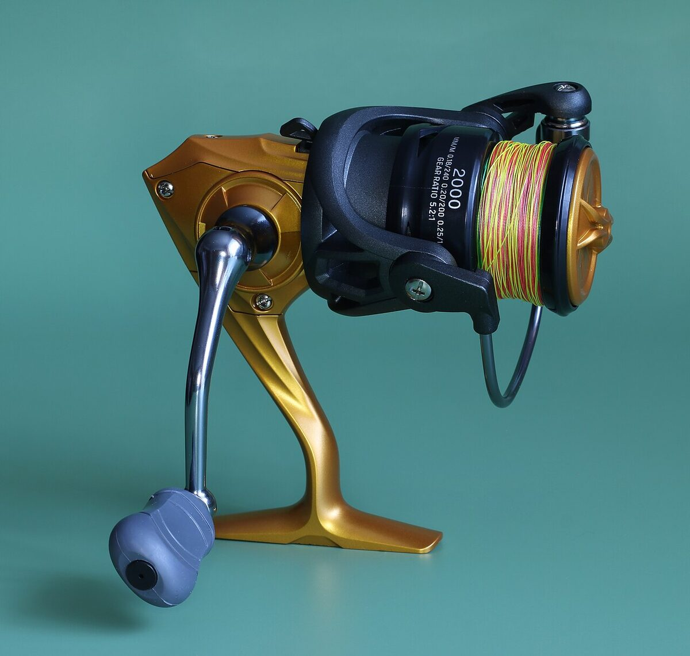

Dlaczego kołowrotek jest tak ważny
Kołowrotek to jedyny element zestawu z mechaniką w środku — przekładnią, łożyskami i hamulcem — i dlatego to na nim najbardziej widać różnicę między sprzętem dobrym a przypadkowym. Tani, źle spasowany kołowrotek skrzypi, nierówno nawija linkę, plącze ją w „peruki” i potrafi zablokować się w najgorszym momencie holu. Jednocześnie nie trzeba wydawać fortuny: rynek dojrzał na tyle, że za 150–300 zł dostaje się dziś mechanizmy, które dekadę temu kosztowały dwa razy więcej. Dla początkującego praktycznie zawsze właściwym wyborem będzie kołowrotek o stałej szpuli (spinningowy) — multiplikatory i kołowrotki muchowe to sprzęt do wyspecjalizowanych metod.
W tym poradniku przechodzimy po kolei przez wszystkie parametry z pudełka: rozmiar, przełożenie, hamulec, łożyska i pojemność szpuli, a na końcu podpowiadamy konkretne konfiguracje do spinningu, spławika i gruntu.
Rozmiary kołowrotków: skala 1000–6000
Producenci opisują wielkość kołowrotka liczbą: 1000, 2000, 2500, 3000, 4000, 5000, 6000 i wyżej (u niektórych marek 10, 20, 30 oznacza to samo co 1000, 2000, 3000). Im większy numer, tym większa szpula, mocniejsza przekładnia i wyższa waga. Rozmiar 1000 to delikatny ultralight na okonie i pstrągi z cienkimi plecionkami; 2000–2500 to najbardziej uniwersalny zakres do lekkiego i średniego spinningu oraz bolonki; 3000–4000 pasuje do cięższego spinningu na szczupaka i sandacza oraz do feedera; 5000–6000 to grunt, ciężki feeder rzeczny, karp i sum.
Warto wiedzieć, że skala nie jest w pełni znormalizowana — „2500” Shimano i „2500” taniej marki mogą się różnić gabarytami, więc najlepiej porównywać wagę (typowo 200–260 g dla rozmiaru 2500) i pojemność szpuli. Zasada kciuka: kołowrotek ma być wyważony z wędką — po złożeniu zestawu punkt równowagi powinien wypadać blisko stopki kołowrotka.
Jaki rozmiar do jakiej metody
Do spinningu ultralekkiego (wędka 2–10 g) wybierz 1000 lub 2000; do uniwersalnego spinningu 5–25 g — 2500, czyli najczęściej polecany rozmiar „pierwszego kołowrotka”; do kija 10–40 g na szczupaka — 3000 lub 4000. Do bolonki i lekkiej odległościówki pasuje 2500–3000 z płytszą szpulą, bo cienka żyłka nie wymaga dużej pojemności. Do feedera na wody stojące dobry jest rozmiar 4000, a na rzekę z ciężkimi koszykami — 5000–6000, najlepiej z głębszą szpulą na żyłkę 0,25–0,28 mm.
Do gruntowego łowienia karpi używa się dużych kołowrotków 6000–10000, często typu „big pit” z bardzo pojemną szpulą do dalekich rzutów. Na start jednak nie warto wchodzić w tę specjalizację — uniwersalne 4000 obsłuży i feeder, i prostą gruntówkę z sygnalizatorem brań.
Przełożenie i odzysk linki
Przełożenie (gear ratio) mówi, ile obrotów wykonuje rotor na jeden obrót korby — typowe wartości to od 4,8:1 do 6,2:1. Ważniejszy w praktyce jest odzysk linki, czyli ile centymetrów żyłki kołowrotek zbiera na obrót korby: wolniejsze modele zbierają około 60–70 cm, szybkie ponad 80–90 cm. Wyższe przełożenie ułatwia szybkie wybieranie luzu i prowadzenie przynęt z nurtem, niższe daje większą siłę uciągu przy holu i wolnym prowadzeniu jigu po dnie. Dla początkującego różnice te nie są krytyczne — standardowe 5,0–5,2:1 sprawdzi się wszędzie.
Zwróć natomiast uwagę na płynność pracy: w sklepie zakręć korbą i posłuchaj. Dobry kołowrotek pracuje cicho, bez wyczuwalnych przeskoków, a rotor nie ma luzów na osi. To prosty test, który mówi o egzemplarzu więcej niż liczba łożysk na pudełku.
Hamulec: przedni czy tylny
Hamulec to mechanizm, który pozwala rybie ściągać linkę pod ustawionym oporem i chroni zestaw przed zerwaniem. Hamulec przedni — pokrętło na szczycie szpuli — działa precyzyjniej i wytrzymuje większe obciążenia, dlatego dominuje w spinningu i nowoczesnych konstrukcjach. Hamulec tylny, regulowany pokrętłem z tyłu korpusu, jest wygodniejszy do korekty w trakcie holu i wciąż bywa spotykany w kołowrotkach spławikowych i gruntowych, ale ustępuje przedniemu siłą i powtarzalnością. Na start lepszy będzie hamulec przedni.
Hamulec ustawia się przed łowieniem, nie w panice podczas holu: opór powinien wynosić mniej więcej jedną czwartą do jednej trzeciej wytrzymałości najsłabszego ogniwa zestawu (zwykle przyponu). Prosty test — linka ściągana ręką ze szpuli ma puszczać płynnie, z wyraźnym, ale nie siłowym oporem. Maksymalna siła hamulca podawana przez producenta (np. 4–10 kg) ma znaczenie głównie przy większych rybach.
Łożyska — ile naprawdę potrzeba
Liczba łożysk (np. 4+1, gdzie „+1” to łożysko jednokierunkowe blokady wstecznej) jest ulubionym chwytem marketingowym tanich marek. Dziesięć kiepskich łożysk pracuje gorzej niż cztery dobre, dlatego nie traktuj tej liczby jako miary jakości. Sensownie skonstruowany kołowrotek potrzebuje 4–6 łożysk w kluczowych punktach: na osi przekładni, w rolce kabłąka i w mechanizmie oscylacji. Rolka kabłąka z łożyskiem jest szczególnie ważna przy plecionce — bez niej linka skręca się i szybciej zużywa.
Ważniejsze od liczby łożysk są: materiał przekładni (mosiądz lub duraluminium zamiast czystego cynku), spasowanie korpusu i jakość blokady wstecznej, dzięki której korba nie ma martwego ruchu przy zacięciu.
Szpula i pojemność linki
Na szpuli znajdziesz oznaczenia pojemności, np. „0,20 mm / 140 m”, mówiące, ile linki danej średnicy się zmieści. W spinningu z plecionką głęboka szpula to wręcz wada — żeby ją zapełnić, trzeba nawinąć podkład z taniej żyłki. Dlatego do plecionek powstały szpule płytkie (oznaczane „shallow” lub literą S). Kluczowa zasada nawijania: linka powinna sięgać 1–2 mm poniżej krawędzi szpuli; za mało — krótsze rzuty, za dużo — samoczynnie schodzące zwoje i plątanina.
Szpule aluminiowe są trwalsze od grafitowych i lepiej znoszą docisk plecionki. Dobrze, jeśli kołowrotek ma w zestawie zapasową szpulę — można nawinąć żyłkę na jedną i plecionkę na drugą, co u początkującego zastępuje drugi kołowrotek. Sprawdź też nawój: po nawinięciu linka ma układać się równym cylindrem, bez stożka i dolin.
Kołowrotki z wolnym biegiem (free spin)
Do gruntowego łowienia karpia, leszcza czy lina przydaje się kołowrotek z systemem wolnego biegu, nazywanym free spin, baitrunner (nazwa spopularyzowana przez Shimano) lub freilauf. Dodatkowa dźwignia z tyłu włącza drugi, bardzo lekki hamulec: ryba może swobodnie odjechać z przynętą bez ryzyka wciągnięcia wędki do wody, a obrót korby natychmiast przywraca główny hamulec. To rozwiązanie typowe dla rozmiarów 4000–6000 i cenione na zestawach z sygnalizatorami brań.
Jeśli planujesz głównie spinning lub spławik, wolny bieg nie jest potrzebny i tylko podnosi wagę oraz cenę. Jeżeli jednak widzisz się przy dwóch wędkach gruntowych na rozkładanym stanowisku, free spin w rozmiarze 5000 będzie strzałem w dziesiątkę.
Przegląd marek kołowrotków
Shimano — japoński lider, słynący z bardzo płynnych przekładni; od budżetowych serii (Sienna, Catana), przez cenione średniopółkowe (Nasci, Stradic), po topowe modele za kilka tysięcy złotych. Daiwa — drugi japoński gigant; lekkie konstrukcje (koncepcja LT — Light & Tough) i bardzo dobre hamulce; popularne serie startowe to Ninja i Legalis, średnia półka — Fuego i Caldia. Okuma — tajwański producent z bardzo dobrym stosunkiem jakości do ceny; modele takie jak Ceymar są często polecane początkującym jako „dużo kołowrotka za niewielkie pieniądze”. Ryobi — marka znana z trwałych przekładni (np. seria Zauber) w średnich cenach.
Mikado, Jaxon i Robinson — polskie firmy z szeroką ofertą tanich i średnich kołowrotków do spławika, gruntu i spinningu; rozsądny start przy małym budżecie i łatwy serwis w kraju. Abu Garcia — szwedzka legenda, dziś szczególnie znana z multiplikatorów, ale z dobrymi kołowrotkami stałoszpulowymi (seria Cardinal). Penn — amerykańska marka kojarzona z mocnym sprzętem morskim i sumowym. Zasada jest niezmienna: porównuj konkretne serie, bo każda marka ma w katalogu zarówno perełki, jak i wypełniacze.
Ile wydać i czego unikać
Sensowne minimum na pierwszy kołowrotek spinningowy to około 150–250 zł — w tym przedziale mieszczą się podstawowe serie Shimano, Daiwy i Okumy oraz lepsze modele polskich marek. Za 300–450 zł dostaje się już mechanizmy z uszczelnieniami i przekładniami, które przy normalnej eksploatacji wytrzymają wiele sezonów. Unikaj kołowrotków bezmarkowych za 30–60 zł z marketów: cynkowe przekładnie i brak łożyskowanej rolki kończą się zwykle perukami i zatarciem w pierwszym sezonie.
Przy zakupie używanego kołowrotka sprawdź luz rotora, pracę korby (równomierna, bez chrupania), stan rolki kabłąka (zakręć ją palcem — ma się obracać) i krawędź szpuli (rysy tną linkę przy każdym rzucie). To cztery punkty, które wykrywają większość ukrytych wad.
Jak nawinąć linkę na kołowrotek
Nawijanie zaczyna się od przywiązania linki do szpuli (np. węzłem arbor); pod plecionkę warto podłożyć kilka zwojów żyłki albo pasek plastra, żeby śliska plecionka nie obracała się na szpuli. Linkę nawijaj pod lekkim naciągiem — przepuszczoną przez wilgotną ściereczkę lub palce — bo luźny nawój gwarantuje peruki. Szpulkę z żyłką ustaw tak, by linka schodziła w tym samym kierunku, w którym obraca się rotor; to ogranicza skręt. Docelowo nawój ma sięgać 1–2 mm pod krawędź szpuli.
Po pierwszej wyprawie z nową żyłką zrób daleki rzut na otwartej wodzie i zwiń linkę pod napięciem — pozbędziesz się resztek skrętu fabrycznego. Plecionkę po sezonie można przewinąć „na drugą stronę”, podwajając jej żywotność.
Konserwacja kołowrotka
Kołowrotek nie lubi dwóch rzeczy: piasku i kąpieli. Nie kładź go bezpośrednio na ziemi (połóż wędkę na podpórce lub pokrowcu), a po łowieniu w deszczu osusz go w temperaturze pokojowej z poluzowanym hamulcem — ściśnięte mokre tarcze hamulca trwale tracą charakterystykę. Raz, dwa razy w sezonie nanieś kroplę oleju do kołowrotków na rolkę kabłąka, przeguby kabłąka i oś korby; przekładnię smaruje się gęstym smarem rzadziej, najlepiej przy okazji serwisu. Nie używaj WD-40 do wnętrza mechanizmu — wypłukuje właściwe smary.
Po zakończeniu sezonu poluzuj hamulec, zdejmij szpulę, usuń pędzelkiem piasek spod rotora i przechowuj kołowrotek w suchym miejscu. Te kilka minut pracy wydłuża życie sprzętu o lata i utrzymuje płynność, za którą zapłaciłeś przy zakupie.
Podsumowanie
Dla większości początkujących idealny pierwszy kołowrotek to stałoszpulowy rozmiar 2500 z przednim hamulcem, przełożeniem około 5,0–5,2:1 i wagą do 260 g — do spinningu i spławika; do feedera i gruntu lepszy będzie 4000–5000, ewentualnie z wolnym biegiem. Budżet 150–300 zł wystarcza na sprawdzone serie Shimano, Daiwy, Okumy czy polskich marek. Przy zakupie oceniaj płynność korby, luz rotora i jakość rolki kabłąka, a nie liczbę łożysk z naklejki.
Dobrze dobrany i doglądany kołowrotek to inwestycja na lata — często zostaje w zestawie długo po tym, jak pierwszą wędkę zastąpi lepsza. Warto więc poświęcić mu przy zakupie więcej uwagi niż jakiemukolwiek innemu elementowi wyprawki.